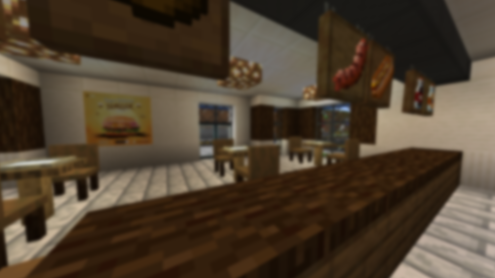
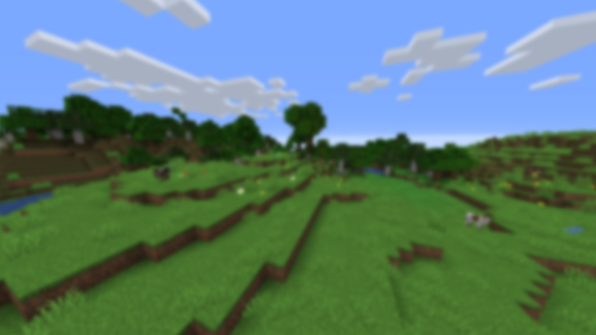

S o c i a l C r a f t _ S e r v e r . a t e r n o s . m e
Read the README.md file inside the versions or the github for more information and how to apply the modpack.

1 . 1 . 0
Finally get to immerse yourself into your chef trance with 4 new food
mods installed such as Cooking Chef, The original Croptopia mod & more!
(Also added a guide for the WorldEdit mod just incase people get confused)

1 . 0 . 2
This update adds the SecurityCraft mod, the Mekanism mod, a bunch
of food and drinks to live your life-long dream of owning a restaurant, and
a few extensions to the Mekanism mod!
1 . 0 . 1
This version adds many optimization mods and new items such as
doors, torches, and more! (We also deleted the Traffic Plus mod
since MTS/IV has the same items but better.)
1 . 0 . 0
Welcome to the world of SocialCraft, where you can meet new people,
play around with mods, and have fun! This version has 26 built-in mods,
some which are super fun to play around with, and some which you can
customize to further expand your experience!
 
